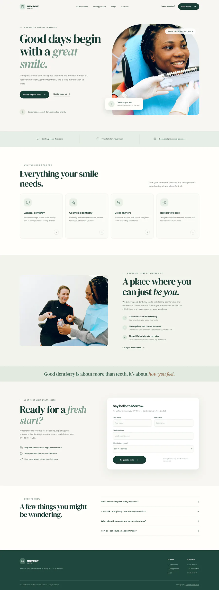

01
8 words
Design a landing page for a dentists office.

Morrow Dental. Calm and safe: a serif headline in sage and cream, stock photos, four service cards with icons, a contact form.
Three AI-built landing pages for one dentist
Same job, three runs. Runs 01 and 02 use the same model; only the prompt changed. Run 03 used a longer prompt and a team of 18 agents from Agency Agents. The prompt set the direction. The agents decided the finish.
Each window scrolls through the whole page. Prompts are verbatim, typos included.
Design a landing page for a dentists office.

Morrow Dental. Calm and safe: a serif headline in sage and cream, stock photos, four service cards with icons, a contact form.
Let's build a landing page for a dentist. This is a new task. Do not to use your model training for design. Instead use design inspiration from the web for dental practices. Let's enhance the design by leveraging the most recent techniques in motion and animation. This is a young dentist with a younger demographic and lots of energy. Design it appropriately! Use image gen to create unique images that match your selected color palette and mission.

Zest Dental Studio. Loud and young: condensed capitals with script accents, four bright colours, a marquee of slogans, colour-block cards, a 3D tooth, a giant smiley.
Let's build a landing page for a dentist. This is a new task. Do not to use your model training for design. Instead use design inspiration from the web for dental practices. Let's enhance the design by leveraging the most recent techniques in motion and animation. This is a young dentist with a younger demographic and lots of energy. Design it appropriately! Use chat gpt (codex) to create unique images that match your selected color palette and mission. Use all applicable agedent from agency-agents, and work in a team until the landing page is complete. IT should be unique and not identifiable as an AI generated design
![Feast Dental. A tangerine poster page: the headline “I don’t care how long it’s been.” in heavy condensed type beside a portrait of the dentist, the price $195 set as large as “General Dentist”, three sample appointment times, a scrolling ticker, a first-visit section with bitten discs, photographs of bitten food, a menu-board price list, a lime section introducing the dentist, a dark “0 reviews” section of promises, a cost section, a storefront photo with hours, an FAQ and a closing line, “No lecture. Price in writing. Come in.”](img/03-900.webp)
Feast Dental. One idea carried through, “teeth are for biting”: stretching poster type, four colours sampled from its own photographs, bitten-food still lifes, the price on the first screen, and “0 reviews” said out loud.
Same model, same reasoning setting. The prompt added a task (look at real dental practices, use current motion), an audience (young, lots of energy) and a rule for the pictures (generate them in the page’s palette). The result went from a safe default to a point of view.
Three things changed at once, so this is not a controlled test: the model, a team of agents, and one requirement the others never had, that it must not look AI-generated. The agents are where that requirement was met. They measured 19 real practice sites, cut the brand down to one idea, wrote every word, directed every photograph, and reviewed the build from thirteen sides.
The lead session wrote the page and applied every fix. These 18 roles from Agency Agents did the rest, each working from its own definition file. Their reports are in the repository.